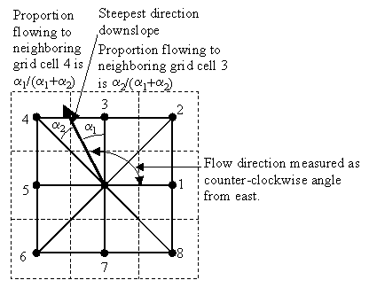

Summary
Calculates a grid of specific catchment area which is the contributing area per unit contour length using the multiple flow direction D-infinity approach. D-infinity flow direction is defined as steepest downward slope on planar triangular facets on a block centered grid. The contribution at each grid cell is taken as the grid cell length (or when the optional weight grid input is used, from the weight grid). The contributing area of each grid cell is then taken as its own contribution plus the contribution from upslope neighbors that have some fraction draining to it according to the D-infinity flow model. The flow from each cell either all drains to one neighbor, if the angle falls along a cardinal (0, pi/2, pi, 3pi/2) or ordinal (pi/4, 3pi/4, 5pi/4, 7pi/4) direction, or is on an angle falling between the direct angle to two adjacent neighbors. In the latter case the flow is proportioned between these two neighbor cells according to how close the flow direction angle is to the direct angle to those cells.

Using the grid cell size as the contribution at each grid cell assumes that grid cell size is the effective contour length in the definition of specific catchment area and does not distinguish any difference in contour length dependent upon the flow direction. The resulting units of the specific catchment area are then length units the same as those of the grid cell size.
If the optional outlet point shapefile is used, only the outlet cells and the cells upslope (by the D-infinity flow model) of them are in the domain to be evaluated.
By default D-infinity specific catchment area is evaluated using checks for edge contamination. This is defined as the possibility that a contributing area value may be underestimated due to grid cells outside of the domain not being counted. This occurs when drainage is inwards from the boundaries or areas with "no data" values for elevation. The algorithm recognizes this and reports "no data" for the contributing area. It is common to see streaks of "no data" values extending inwards from boundaries along flow paths that enter the domain at a boundary. This is the desired effect and indicates that contributing area for these grid cells is unknown due to it being dependent on terrain outside of the domain of data available. Edge contamination checking may be turned off in cases where you know it is not an issue or want to ignore these problems, if for example, the DEM has been clipped along a watershed outline.
Usage
Command Prompt Syntax:
mpiexec -n <number of processes> AreaDinf
-ang <angfile>
-sca <scafile>
[-o <outletfile>]
[-wg <wgfile>]
[-nc]
[-lyrname <layer name>]
[-lyrno <layer number>]
Parameters:
- angfile: Input D-infinity flow directions grid
- scafile: Output D-infinity contributing area grid
- outletfile: input outlets file (OGR readable dataset)
- wgfile: Input weight grid (optional)
- nc: Flag for edge contamination
- layer name: OGR layer name if outlets are not the first layer in outletfile (optional)
- layer number: OGR layer number if outlets are not the first layer in outletfile (optional)
Note: Layer name and layer number should not both be specified.
Syntax
AreaDinf (Input_D-Infinity_Flow_Direction_Grid, {Input_Outlets}, {Input_Weight_Grid}, Check_for_Edge_Contamination, Input_Number_of_Processes, Output_D-Infinity_Specific_Catchment_Area_Grid)
| Parameter | Explanation | Data Type |
|---|---|---|
| Input_D-Infinity_Flow_Direction_Grid |
Dialog Reference A grid of flow directions based on the D-infinity flow method using the steepest slope of a triangular facet (Tarboton, 1997, "A New Method for the Determination of Flow Directions and Contributing Areas in Grid Digital Elevation Models," Water Resources Research, 33(2): 309-319). Flow direction is determined as the direction of the steepest downward slope on the 8 triangular facets of a 3 x 3 block centered grid. Flow direction is encoded as an angle in radians, counter-clockwise from east as a continuous (floating point) quantity between 0 and 2 pi. The resulting flow in a grid is then usually interpreted as being proportioned between the two neighboring cells that define the triangular facet with the steepest downward slope. There is no python reference for this parameter. |
Raster Layer |
| Input_Outlets (Optional) |
Dialog Reference A point feature defining the outlets of interest. If this input is used, only the cells upslope of these outlet points are considered to be within the domain being evaluated. There is no python reference for this parameter. |
Feature Layer |
| Input_Weight_Grid (Optional) |
Dialog Reference A grid giving contribution to flow for each cell. These contributions (also sometimes referred to as weights or loadings) are used in the contributing area accumulation. If this input file is not used, the result is reported in terms of specific catchment area (the upslope area per unit contour length) taken as the number of cells times grid cell length (cell area divided by cell length). There is no python reference for this parameter. |
Raster Layer |
| Check_for_Edge_Contamination |
Dialog Reference A flag that indicates whether the tool should check for edge contamination. Edge contamination is defined as the possibility that a contributing area value may be underestimated due to the fact that grid cells outside of the domain have not been evaluated. This occurs when drainage is inwards from the boundaries or areas with "no data" values for elevation. The algorithm recognizes this and reports "no data" for the impacted cells. It is common to see streaks of "no data" values extending inwards from boundaries along flow paths that enter the domain at a boundary. This is the desired effect and indicates that contributing area for these grid cells is unknown due to it being dependent on terrain outside of the domain of available data. Edge contamination checking may be turned off in cases where you know this is not an issue, or want to ignore these problems, if for example, the DEM has been clipped along a watershed outline. There is no python reference for this parameter. |
Boolean |
| Input_Number_of_Processes |
Dialog Reference The number of stripes that the domain will be divided into and the number of MPI parallel processes that will be spawned to evaluate each of the stripes. There is no python reference for this parameter. |
Long |
| Output_D-Infinity_Specific_Catchment_Area_Grid |
Dialog Reference A grid of specific catchment area which is the contributing area per unit contour length using the multiple flow direction D-infinity approach. The contributing area of each grid cell is then taken as its own contribution plus the contribution from upslope neighbors that have some fraction draining to it according to the D-infinity flow model. There is no python reference for this parameter. |
Raster Dataset |
Code Samples
There are no code samples for this tool.
Tags
There are no tags for this item.
Credits
There are no credits for this item.
Use limitations
There are no use limitations for this item.